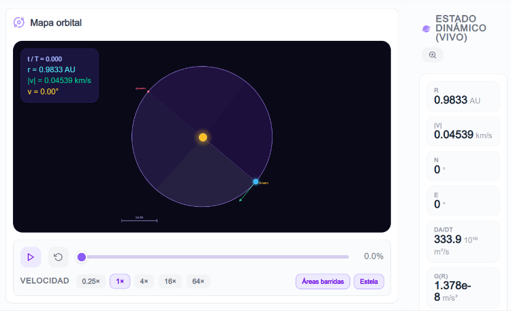
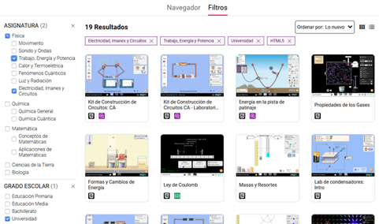

Simulador virtual PhET
Los simuladores son herramientas digitales que se encargan de reproducir de forma lo más realista posible distintos escenarios o procedimientos. De esta manera, permiten que los usuarios puedan interactuar con ellos sin riesgo. Los entornos virtuales van un paso más allá, y lo que hacen es crear espacios digitales completos, muchas veces inmersivos. En estos, los estudiantes pueden practicar, aprender y colaborar, como si del mundo real se tratara.
En palabras de Hernández, eta al (2021) afirma que; “Los simuladores virtuales pueden tener una influencia beneficiosa en el proceso enseñanzaaprendizaje, ya que permiten al estudiante revisar el contenido en varias oportunidades, proporcionando una evaluación diagnóstica de sus necesidades y permitiéndoles descubrir los conceptos individualmente.” (Pag 4)
Por otro lado, el uso de simuladores como herramienta tecnológica proporciona a los estudiantes un mayor contacto efectivo con la ciencia, que les permite aprender a través de la exploración y el descubrimiento de una manera intuitiva y significativa. Para que eso suceda, debemos proponerle al estudiante una tarea de aprendizaje, que dependa secuencialmente de otra, que no se puede realizar sin un dominio perfecto del precedente. (Hernández, 2021)
Según Kenski 2007, como cita Hernández et al (2021) “la educación y las tecnologías son inseparables”
Al mismo tiempo, las tecnologías han asumido un papel muy importante en el entorno educativo, ayudando a los estudiantes a asimilar y socializar mejor el contenido. cuando se usan bien, causan cambios en el comportamiento de profesores y estudiantes, lo que conduce al éxito de la práctica pedagógica.
Función del Simulador virtual PhET en las Leyes de Kepler
El simulador virtual PhET “Leyes de Kepler” funciona como un recurso interactivo que permite explorar el movimiento de los planetas y las características de sus órbitas mediante la manipulación de diferentes variables. El simulador está organizado en diferentes espacios que permiten estudiar de manera independiente la Primera, Segunda y Tercera Ley de Kepler, así como observar la relación existente entre el movimiento planetario y las características de las órbitas.
En la Primera Ley de Kepler, el simulador permite observar la forma de las órbitas y explorar elementos relacionados con las elipses, como los focos, los ejes y la excentricidad. El estudiante puede modificar diferentes parámetros y observar cómo estos influyen en la representación de la órbita, facilitando el análisis de las características del movimiento planetario.

En la Segunda Ley de Kepler, el simulador permite analizar el movimiento del planeta en diferentes posiciones de su órbita, relacionando su velocidad con las áreas barridas durante determinados intervalos de tiempo. Esto permite observar que la velocidad del planeta cambia según su posición y comparar las áreas recorridas en intervalos de tiempo iguales.
En la Tercera Ley de Kepler, el simulador permite explorar la relación entre el semieje mayor de la órbita y el período orbital. Mediante la modificación de diferentes valores y la observación de los resultados, los estudiantes pueden analizar cómo se relacionan estas magnitudes en el movimiento de los cuerpos del sistema planetario.

De esta manera, el simulador PhET permite que el estudiante observe, manipule variables, compare resultados y analice el movimiento planetario, relacionando las observaciones obtenidas con las tres Leyes de Kepler. Su utilización dentro de la propuesta permitirá abordar este contenido de una manera interactiva, favoreciendo la comprensión de las características de las órbitas y de las relaciones que describen el movimiento de los planetas.
Ventajas del Uso de Simulaciones en la Docencia
- Interactividad y participación activa: las simulaciones permiten a los estudiantes manipular variables y observar los resultados en tiempo real, lo que promueve un aprendizaje más profundo y activo.
- Visualización de conceptos complejos: muchos conceptos científicos son difíciles de visualizar mediante métodos tradicionales de enseñanza. Las simulaciones de PhET proporcionan representaciones visuales que hacen estos conceptos más accesibles y comprensibles para los estudiantes.
- Adaptabilidad y flexibilidad: estas herramientas son altamente adaptables a diferentes niveles educativos y estilos de aprendizaje.
- Fomento de la curiosidad y la exploración: al permitir a los estudiantes explorar y experimentar en un entorno seguro y controlado, las simulaciones fomentan la curiosidad y el deseo de aprender. (RIO, 2024)
Implementación en el Aula
Según RIO (2024) afirma que; las simulaciones de PhET en la docencia universitaria, se pueden emplear como parte de las siguientes estrategias metodológicas:
- Aprendizaje Basado en Proyectos (ABP): el uso de simulaciones como parte de proyectos más amplios donde los estudiantes deben resolver problemas reales aplicando los conceptos aprendidos puede mejorar la comprensión, así como desarrollar habilidades de resolución de problemas y pensamiento crítico.
- Flipped Classroom (Aula Invertida): las simulaciones se pueden mandar como tarea previa a la clase para que los estudiantes lleguen al aula con una comprensión básica de los conceptos. Durante la clase, el tiempo se puede dedicar a discutir los resultados y profundizar en los temas tratados.
- Evaluación Formativa: las simulaciones también se pueden emplear para evaluar la comprensión de los estudiantes en tiempo real. Esto permite a los docentes identificar las áreas de mayor dificultad de sus estudiantes y ajustar la enseñanza en consecuencia.
Para que sirve Simulador virtual PhET
El simulador virtual PhET sirve para facilitar la comprensión de los contenidos científicos mediante experiencias de aprendizaje más visuales, dinámicas e interactivas. En el caso de las Leyes de Kepler, permite acercar al estudiante al estudio del movimiento planetario mediante la experimentación virtual, haciendo que los contenidos puedan ser comprendidos de una manera más concreta. (Villarreal, 2024)
Asimismo, su utilización sirve para relacionar los conocimientos teóricos con la observación de los fenómenos, favoreciendo que los estudiantes puedan interpretar y comprender aquellos contenidos que pueden resultar abstractos cuando se abordan únicamente de forma teórica. Esto contribuye a que el aprendizaje sea más significativo y facilite la apropiación de los conocimientos.
Además, el uso del simulador PhET sirve para promover la participación activa del estudiante en su propio aprendizaje, al brindarle un entorno donde puede explorar, experimentar y reflexionar sobre los fenómenos estudiados. De esta manera, se convierte en un recurso didáctico que puede fortalecer la comprensión, despertar el interés por la Física y favorecer el desarrollo de habilidades de análisis y resolución de situaciones relacionadas con las Leyes de Kepler.
Percepciones de los estudiantes sobre el uso de PhET.
Las percepciones de los estudiantes sobre el uso del simulador PhET son favorables, debido a que lo consideran un recurso que facilita la comprensión de los contenidos y hace que el proceso de aprendizaje sea más dinámico. Su utilización permite que los estudiantes se involucren de manera activa en las actividades, relacionando los conocimientos teóricos con la observación de los fenómenos mediante la simulación (Estefania, 2025).
Asimismo, el uso de PhET puede generar mayor interés y motivación en los estudiantes, ya que les permite aprender mediante la interacción y la experimentación. En este sentido, las experiencias obtenidas durante el uso del simulador pueden contribuir a que los estudiantes comprendan con mayor facilidad contenidos que podrían resultar abstractos cuando se desarrollan únicamente mediante explicaciones teóricas.
De acuerdo con Estefania, et al (2025) En una investigación sobre el uso de PhET como herramienta didáctica, los estudiantes manifestaron percepciones positivas respecto a su utilización, señalando que el simulador facilitó la comprensión de los contenidos y que les ayudó más que las clases desarrolladas únicamente con métodos tradicionales. Estos resultados evidencian que la incorporación de PhET puede favorecer una experiencia de aprendizaje más participativa y comprensible para los estudiantes.